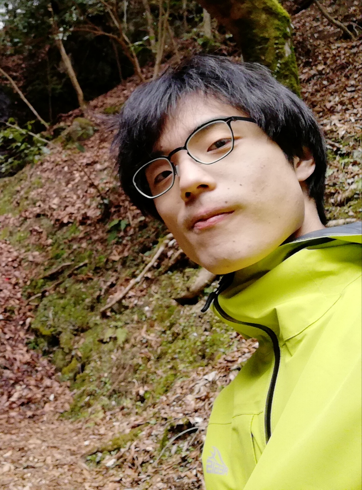
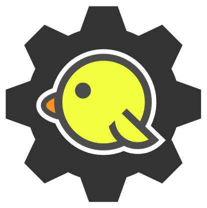
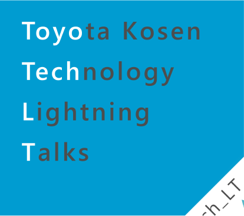
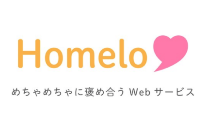
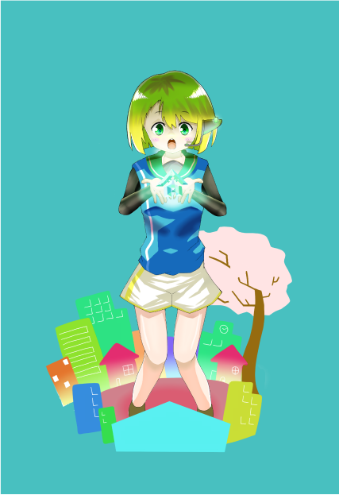
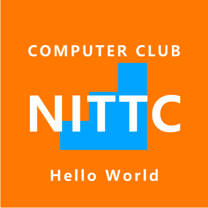

about

南 仁稀
豊田高専情報工学科5年。
趣味は旅行とヨーヨー。
10年くらい京都に住んでた。
今は名古屋市在住。
contents





skills
Node.js
これがないと始まらない。
Web開発のおとも。
React
バイトで使ってる。
公式サイトの解説が詳しい。
Express
WebAPIつくりでつかった。
バックエンドJSの代表？
Gulp
タスクランナーツール。
静的サイトつくりめちゃ捗る。
Express
WebAPIつくりでつかった。
バックエンドJSの代表？
Unity
アプリ開発・ハード制御で利用。
わりと長い付き合い。
AdobeXD
UIトレースとかでお世話になった。
最近はFigmaに浮気気味。
AdobeIllustrator
ロゴやアイコン作成のときに利用。
AdobeFonts使いたいときにも使う。
Figma
今時分の中で最もアツいプロトタイプツール。
Web上で完結するのがエグい。好き。
Git
複数人開発のおとも。
ちゃんと使いこなせると嬉しい。
career
-
2015.4
豊田高専入学
-
2017.7
バレー部を退部、コンピュータ部に入部
-
2017.8
Hack U Nagoyaに参加。
星空キャンバスの一部機能を備えたアプリを作成 -
2017.12
ぐんまプログラミングアワード予選通過
二次予選も通過しファイナリストに -
2018.1
起業家甲子園出場
「みまもったろー」という運転支援デバイスを紹介 -
2018.5
名大の競プロ講習会・コンテストであるNUPSCにて入賞
-
2018.10
高専プログラミングコンテストにて特別賞受賞
町内会向けWebアプリ「ローカルコネクト」を開発 -
2018.12
高専ワイヤレスIoTコンテストに採択される
DocomoOpenHouseに登壇 -
2019.1
上記コンテストの実証実験を行う
「どこでも3次元軌道システム」を開発 -
2019.4
CyberAgent主催の「平成最後のハッカソン」に参加
平成を振り返る「平成クイズ合戦ぽんぽこ」を開発